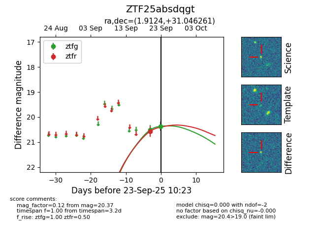
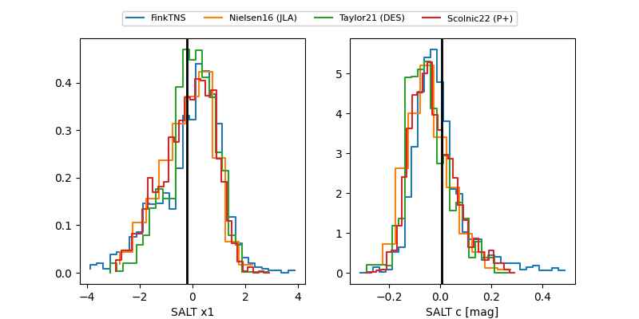

FINK: ZTF25absdqgt
Lasair: ZTF25absdqgt
ALeRCE: ZTF25absdqgt
ZTF25absdqgt (ztf,fink)
equatorial (ra, dec) = (1.9124,+31.04626)
galactic (l, b) = (112.0024,-30.89448)


last ztfg=20.37, ztfr=20.57
2 ztfg, 1 ztfr detections